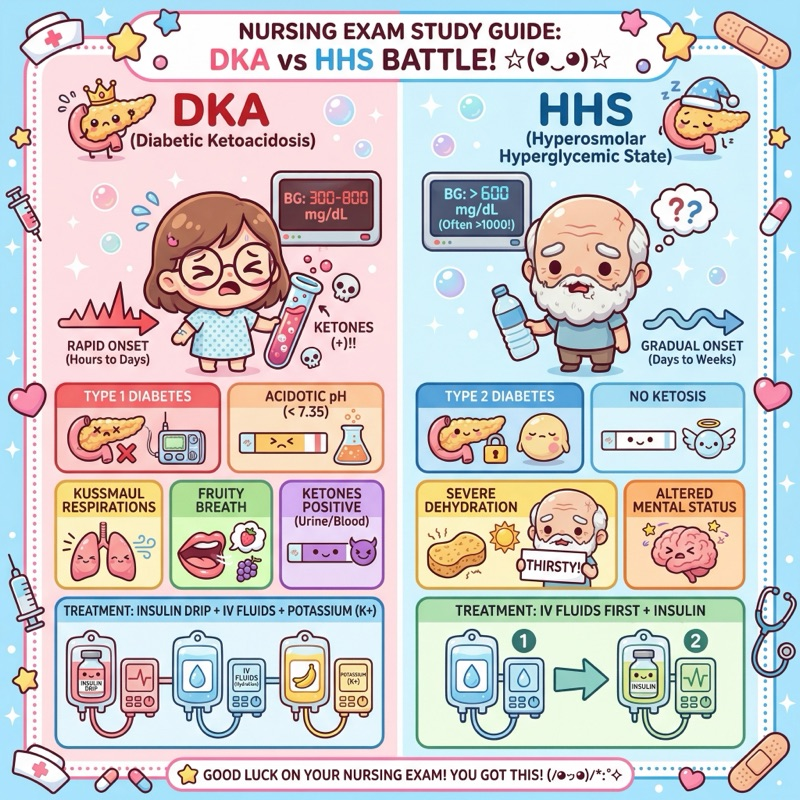

DKA vs HHS: what to compare first
When a question gives you hyperglycemia plus dehydration, slow down and compare the pattern. DKA and HHS overlap, but they do not feel the same clinically.
Watch the diabetes review

Fast compare
- DKA: ketones, acidosis, Kussmaul respirations, often faster onset.
- HHS: extreme dehydration, very high glucose, neuro changes, usually minimal ketones.
- Both: fluids and careful monitoring matter. Potassium can become dangerous during treatment.
Question trap
Do not stop at “high glucose.” Ask what the body is doing with acid-base status, ketones, breathing, mental status, and fluid volume.